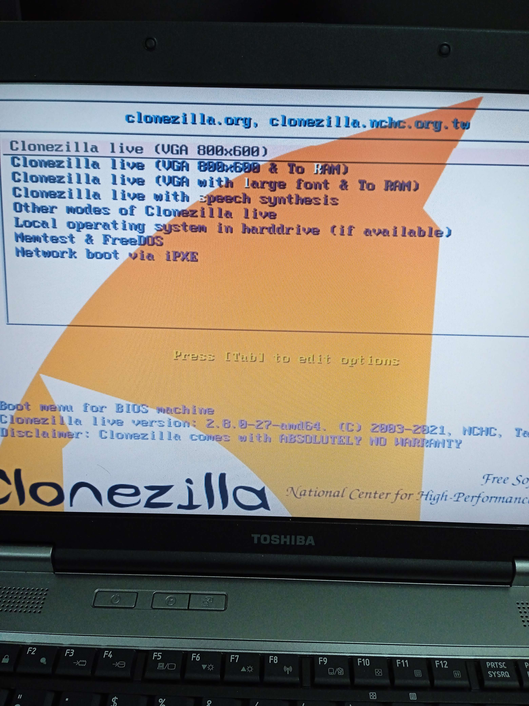
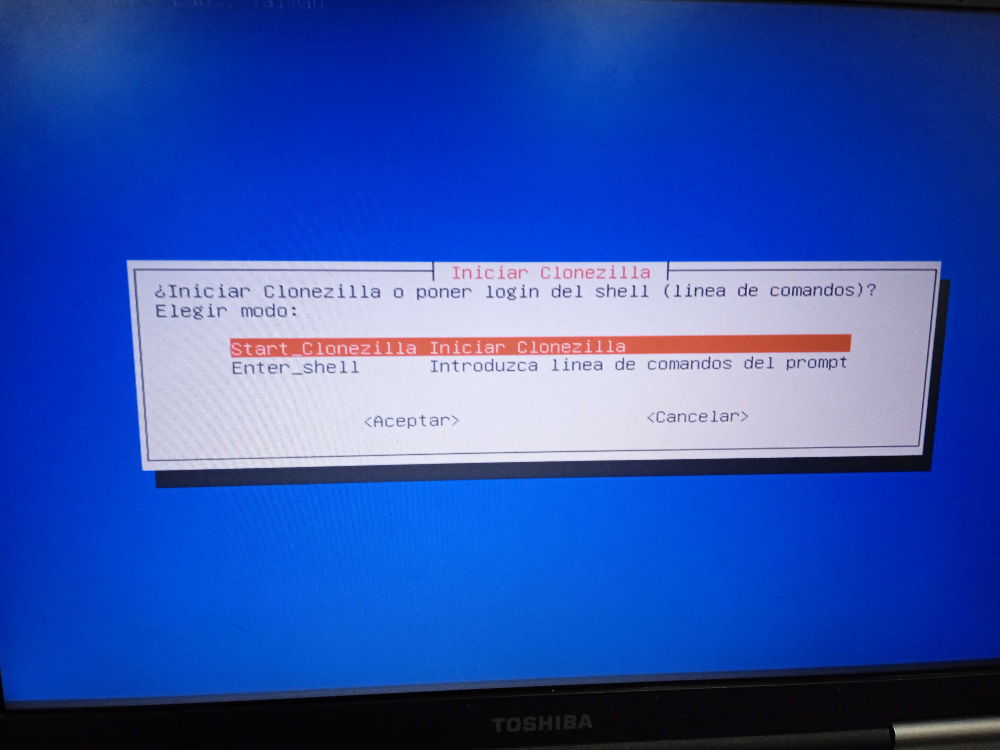
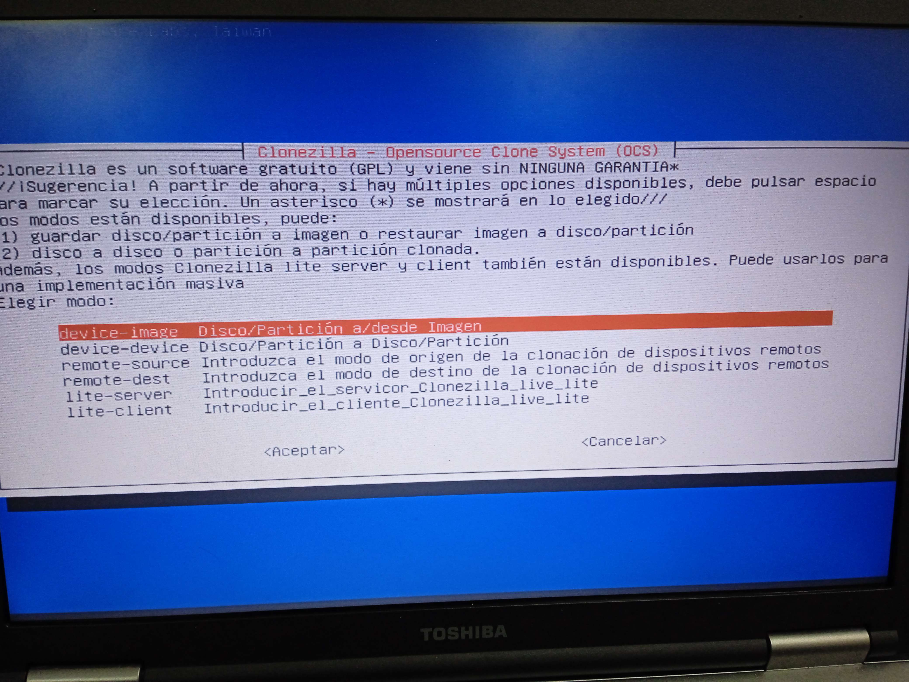
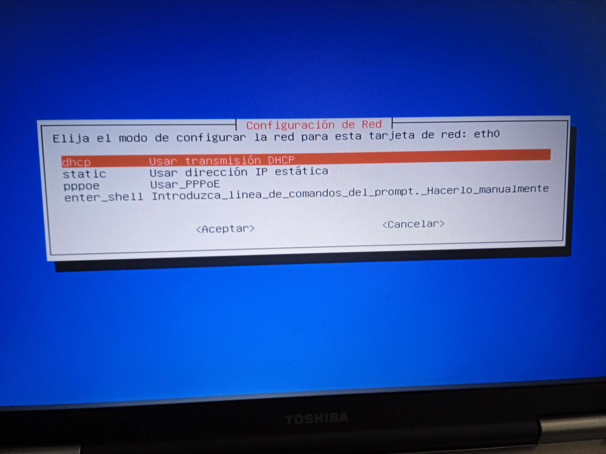
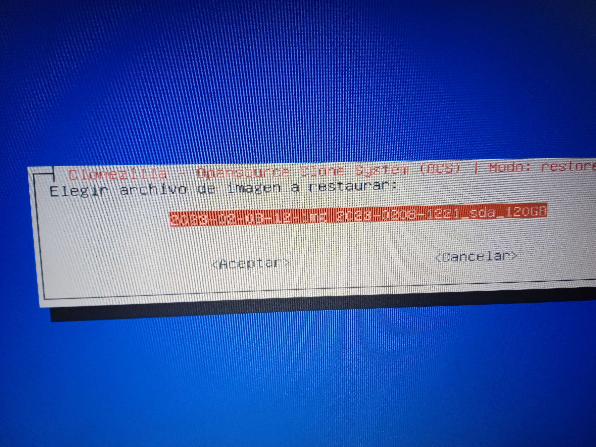

Para realizar la recuperación remota, necesitaremos haber realizado previamente una clonación remota, explicada en el apartado Clonacion Remota
Arrancamos clonecilla desde nuestro pendrive
Seleccionamos clonezilla Live VGA

Mantenemos la distribución por defecto
Iniciamos Clonecilla
Seleccionamos la primera opción: "Disco/partición a/desde Imagen"

Seleccionaremos samba_server para utilizar un servidor de red local desde el que importar la imagen
Dentro del siguiente menu, seleccionamos Restaurar imagen a disco local
Seleccionamos la transmisión DHCP para configurar la red

Dejaremos la opción por defecto, dejando que samba establezca los protocolos necesarios

Introducimos la dirección ip del servidor donde está alojada la imagen
Seleccionamos una de las imágenes almacenadas

Seleccionamos el dispositivo donde queremos restaurar la imagen

Para mayor velocidad, nos saltaremos la comprobación de la imagen

Marcaremos la primera opción, permitiendonos elegir la opción que queremos realizar una vez terminado el proceso
Aparecerá el siguiente menú. Escribimos y para aceptar y continuar
Comenzará el proceso de recuperación
Si no hay ningun error, se nos presentará la siguiente pantalla

Seleccionamos la opción deseada para finalizar, en nuestro caso, apagaremos el equipo.